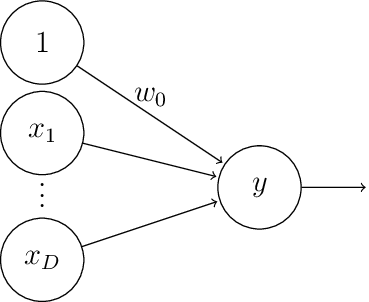

Introduction aux réseaux de neurones
Contents
Introduction aux réseaux de neurones#
Réseaux de neurones et apprentissage automatique#
Les réseaux de neurones artificiels sont des techniques issues du domaine du connexionisme. Le courant connexionniste insiste sur le grand nombre de connexions (sous forme de réseau) réalisées entre les différents automates que sont les neurones. Le connexionisme permet :
de disposer de nouveaux moyens de calcul : conversion de l’information des systèmes avec des applications pratiques ;
de modéliser des phénomènes biologiques pour en apprendre davantage sur le cerveau en l’observant comme si c’était une machine de traitement électrique.
La démarche des réseaux de neurones s’oppose en certains points à celle de l’intelligence artificielle basée règles, qui sont manipulées selon les techniques de la logique formelle afin de fournir une représentation explicite du raisonnement. Cette méthodologie implique une approche « descendante » : elle part de l’analyse de la manière dont l’être humain procède pour résoudre des problèmes ou pour les apprendre, et tente de restituer cette démarche en la décomposant en unités élémentaires. Les réseaux de neurones, eux, procèdent selon une approche « ascendante » qui tente de produire des phénomènes complexes à partir d’opérations très élémentaires.
Du neurone biologique au neurone formel#
La reconnaissance du fait que le cerveau fonctionne de manière
entièrement différente de celle d’un ordinateur conventionnel a joué un
rôle très important dans le développement des réseaux de neurones
artificiels. Les travaux effectués pour essayer de comprendre le
comportement du cerveau humain ont mené à représenter celui-ci par un
ensemble de composants structurels appelés neurones, massivement
interconnectés entre eux. Le cerveau humain en contient en moyenne une dizaine de milliards, chacun d’entre eux étant connecté, encore une fois en moyenne,
connecté à dix mille autres.
Le neurone biologique est composé de quatre parties distinctes (Fig. 1) :
le corps cellulaire, qui contient le noyau de la cellule nerveuse; c’est en cet endroit que prend naissance l’influx nerveux, qui représente l’état d’activité du neurone;
les dendrites, ramifications tubulaires courtes formant une espèce d’arborescence autour du corps cellulaire; ce sont les entrées principales du neurone, qui captent l’information venant d’autres neurones;
l”axone, longue fibre nerveuse qui se ramifie à son extrémité; c’est la sortie du neurone et le support de l’information vers les autres neurones;
la synapse, qui communique l’information, en la pondérant par un poids synaptique, à un autre neurone; elle est essentielle dans le fonctionnement du système nerveux.
Fig. 1 Neurone biologique#
La transmission de l’information d’un neurone à l’autre s’effectue au moyen de l’influx nerveux, qui est constitué d’une impulsion électrique, d’une durée d’environ 2 ms et d’une amplitude de 100 mV. Une cellule nerveuse standard non sollicitée en émet en moyenne cinquante à la seconde (activité spontanée). La probabilité d’émettre une impulsion est accrue ou réduite selon que la somme pondérée des entrées du neurone est globalement excitatrice ou inhibitrice. Cette fréquence peut ainsi être portée jusqu’à 100 impulsions par seconde, pour un neurone bombardé d’effets synaptiques excitateurs ; dans le cas contraire, elle peut être réduite à néant (le neurone reste silencieux). Les effets synaptiques qui agissent sur le neurone entraînent donc une modulation de la fréquence d’émission de l’influx nerveux. Le message transmis est précisément contenu dans le nombre d’influx nerveux émis, défini par une moyenne sur quelques dizaines de ms. L’information contenue dans le cerveau, quant à elle, est représentée par les poids synaptiques attribués aux entrées de chaque neurone. Le cerveau est capable d’organiser ces neurones, selon un assemblage complexe, non-linéaire et extrêmement parallèle, de manière à pouvoir accomplir des tâches très élaborées. Du fait du grand nombre de neurones et de leurs interconnexions, ce système possède une propriété de tolérance aux fautes. Ainsi, la défectuosité d’un neurone n’entraînera aucune perte réelle d’information, mais seulement une faible dégradation en qualité de toute l’information contenue dans le système.
C’est la tentative de donner à l’ordinateur les qualités de perception du cerveau humain qui a conduit à une modélisation électrique de celui-ci. C’est cette modélisation que tentent de réaliser les réseaux de neurones artificiels, dont l’élaboration repose sur base de la définition suivante, proposée par Haykin :\
Un réseau de neurones est un processus distribué de manière massivement parallèle, qui a une propension naturelle à mémoriser des connaissances de façon expérimentale et de les rendre disponibles pour utilisation. Il ressemble au cerveau en deux points :
la connaissance est acquise au travers d’un processus d’apprentissage;
les poids des connections entre les neurones sont utilisés pour mémoriser la connaissance
La première étude systématique du neurone artificiel est due au neuropsychiatre McCulloch et au logicien Pitts qui s’inspirèrent de leurs travaux sur les neurones biologiques.
Classification des réseaux de neurones#
Un réseau de neurones est constitué d’un grand nombre de cellules de base interconnectées. De nombreuses variantes sont définies selon le choix de la cellule élémentaire, de l’architecture et de la dynamique du réseau.
Une cellule élémentaire peut manipuler des valeurs binaires ou réelles. Les valeurs binaires sont représentées par 0 et 1 ou -1 et 1. Différentes fonctions d’ctivation peuvent être utilisées pour le calcul de la sortie. Le calcul de la sortie peut être déterministe ou probabiliste.
L’architecture du réseau peut être sans rétroaction, c’est à dire que la sortie d’une cellule ne peut influencer son entrée. Elle peut être avec rétroaction totale ou partielle.
La dynamique du réseau peut être synchrone : toutes les cellules calculent leurs sorties respectives simultanément. La dynamique peut être asynchrone. Dans ce dernier cas, on peut avoir une dynamique asynchrone séquentielle : les cellules calculent leurs sorties chacune à son tour en séquence ou avoir une dynamique asynchrone aléatoire.
Par exemple, si on considère des neurones à sortie stochastique -1 ou 1 calculée par une fonction à seuil basée sur la fonction sigmoïde, une interconnection complète et une dynamique synchrone, on obtient le modèle de Hopfield et la notion de mémoire associative.
Si on considère des neurones déterministes à sortie réelle calculée à l’aide de la fonction sigmoïde, une architecture sans rétroaction en couches successives avec une couche d’entrée et une couche de sortie, une dynamique asynchrone séquentielle, on obtient le modèle du Perceptron multi-couches (PMC).
Applications#
En apprentissage, les réseaux de neurones sont essentiellement utilisés pour :
l’apprentissage supervisé ;
l’apprentissage non supervisé ;
l’apprentissage par renforcement.
Dans la suite, nous nous intéressons essentiellement au cas de l’apprentissage supervisé. Le cas des réseaux de neurones en apprentissage non supervisé concerne principalement les cartes de Kohonen, les machines de Boltzmann restreintes (RBM) et les autoencodeurs.
Perceptron#
Définitions#
Definition 1 (Neurone)
Un neurone est une fonction non linéaire, paramétrée à valeurs bornées.
Les \(D\) variables sur lesquelles opère le neurone sont habituellement
désignées sous le terme d’entrées du neurone (notées
\(x_i,i\in[\![1,D]\!])\), et la valeur de la fonction sous celui de sortie
\(y\).
Le neurone formel calcule la sortie selon la formule :
où :
\(\mathbf w = (w_1\cdots w_D)^\top\) est le vecteur des poids synaptiques qui pondèrent les entrées du neurone,
\(w_0\) est un biais
\(\mathbf w^\top \mathbf x\) est le potentiel du neurone
\(f\) est la fonction d’activation associée au neurone.
Definition 2 (Réseau de neurones)
Un réseau de neurones est un ensemble de neurones interconnectés. Les réseaux de neurones peuvent être visualisés par l’intermédiaire d’un graphe orienté. Chaque neurone est un noeud, les neurones étant connectés par des arêtes.
On distingue habituellement neurone d’entrée et neurone de sortie. Un neurone d’entrée calcule \(y = x\) où \(x\) est une entrée unique du neurone. Les neurones de sortie prennent un nombre quelconque d’entrées. Interconnectés, l’ensemble de ces neurones calcule \(\mathbf y(x)\) dont la dimension est donnée par le nombre de neurones d’entrée et de sortie (l’entrée du réseau est acceptée par les neurones d’entrée, qui forment la rétine), et la sortie du réseau est formée par les neurones de sortie.
Le cas le plus simple est celui d’un réseau comportant un seul neurone de sortie. C’est le perceptron. Le perceptron est un modèle de réseau de neurones avec algorithme d’apprentissage (Rosenblatt en 1958). L’idée sous-jacente de ce modèle est le fonctionnement de la rétine, l’étude de la perception visuelle. Nous commençons par aborder le cas du perceptron linéaire à seuil.
Definition 3 (Perceptron linéire à seuil)
Un perceptron linéaire à seuil prend en entrée \(D\) valeurs \(x_1\cdots x_D\) (la rétine) et calcule une sortie \(y\). Suivant la définition précédente, un perceptron est défini par la donnée de \(D+1\) constantes : les poids synaptiques \(w_1,\cdots,w_D\) et un seuil (ou le biais) \(\theta\). La sortie \(y\) est calculée par
Les entrées \(x_1,\cdots x_D\) peuvent être à valeurs dans {0,1} (ou {-1,1}) ou réelles, les poids peuvent être entiers ou réels.
Pour simplifier les notations et certaines preuves, on remplace souvent le seuil par un poids supplémentaire \(w_0\) associé à une entrée \(x_0=1\). L’équivalence entre le modèle avec seuil et le modèle avec entrée supplémentaire à 1 est immédiate : le coefficient \(w_0\) est l’opposé du seuil \(\theta\).

On note \(\mathbf w\) (respectivement \(\mathbf x\)) \(\in\mathbb R^{D+1}\) le vecteur des poids (resp. des entrées), augmenté de \(w_0\) (resp. \(x_0\)=1). Comme suggéré par la définition, on peut décomposer le calcul de la sortie \(y\) en un premier calcul de la quantité \(\mathbf w^T\mathbf x=\displaystyle\sum_{i=0}^Dw_ix_i\) appelée potentiel post-synaptique ou entrée totale, suivi d’une application d’une fonction d’activation sur cette entrée totale. Dans le cas du perceptron linéaire à seuil, la fonction d’activation est la fonction de Heaviside définie par \(f(x)=1_{\{x>0\}}\) lorsque la sortie est en {0,1}, et \(g(x) = 2f(x) - 1\) lorsque la sortie est en {-1,1}.
Utilisation : discrimination linéaire#
Soit \({\cal E}_a\) un ensemble d’exemples dans \(\mathbb R^D\times\){0,1} . On note
On dit que
\({\cal E}_a\) est linéairement séparable s’il existe un hyperplan \(H\)
de \(\mathbb R^D\) tel que les ensembles \({\cal E}_a^0\) et \({\cal E}_a^1\)
soient situés de part et d’autre de cet hyperplan.
On montre qu’un perceptron linéaire à seuil à \(D\) entrées divise
l’espace des entrées \(\mathbb R^D\) en deux sous-espaces délimités par un
hyperplan \(\mathbf w^T\mathbf x=-\theta\). Réciproquement, tout ensemble linéairement séparable
peut être discriminé par un perceptron.
Un perceptron est donc un discriminant linéaire. On montre facilement
qu’un échantillon de \(\mathbb R^D\) est séparable par un hyperplan si et
seulement si l’échantillon de \(\mathbb R^{D+1}\) obtenu en rajoutant une
entrée toujours égale à 1 est séparable par un hyperplan passant par
l’origine.
Toute fonction de \(\mathbb R^D\) dans {0,1} n’est bien sur pas calculable par
un tel perceptron.
Algorithme d’apprentissage par correction d’erreur#
Étant donné un échantillon d’apprentissage \({\cal E}_a\) de
\(\mathbb R^D\times\) {0,1} (respectivement \(\{0,1\}^n\times\) {0,1}),
c’est-à-dire un ensemble d’exemples dont les descriptions sont \(D\)
attributs réels (respectivement binaires) et la classe est binaire, il
s’agit de trouver un algorithme qui infère à partir de \({\cal E}_a\) un
perceptron qui classifie correctement les éléments de \({\cal E}_a\) au vu
de leurs descriptions si c’est possible, ou au mieux sinon.
L’algorithme d’apprentissage peut être décrit succinctement de la
manière suivante. On initialise les poids du perceptron à des valeurs
quelconques. A chaque fois que l’on présente un nouvel exemple, on
ajuste les poids selon que le perceptron l’a correctement classé ou non.
L’algorithme s’arrête lorsque tous les exemples ont été présentés sans
modification d’aucun poids ou qu’un nombre maximum d’itération a été atteint.
Dans la suite, on note \(\mathbf{x_n}\) une entrée. La ième composante de \(\mathbf{x_n}\) est notée \(x_n^i\). Pour simplifier l’explication de l’algorithme, cette composante sera supposée binaire. Un échantillon \({\cal E}_a\) est un ensemble de couples \((\mathbf{x_n},t_n)\) où \(t_n\) est la classe binaire de \(\mathbf{x_n}\). Si une entrée \(\mathbf{x_n}\) est présentée en entrée d’un perceptron, on note \(y_n\) la sortie binaire calculée par le perceptron. Rappelons qu’il existe une \((D+1)^\textrm{ème}\) entrée \(x_0\) de valeur 1 pour le perceptron. L’apprentissage par correction d’erreur du perceptron est donné dans l”Algorithm 1
Algorithm 1 (Algorithme d’apprentissage du perceptron par correction d’erreur)
Initialisation aléatoire des \(w_i\)
Tant que (test)
Prendre un exemple \((\mathbf{x_n},t_n)\) dans \({\cal E}_a\)
Calculer la sortie \(y_n\) du perceptron pour l’entrée \(\mathbf{x_n}\)
\((\forall i)\; w_i \leftarrow w_i+(t_n-y_n)x_n^i\)
La procédure d’apprentissage du perceptron est une procédure de correction d’erreur puisque les poids ne sont pas modifiés lorsque la sortie attendue \(t_n\) est égale à la sortie calculée \(y_n\) par le perceptron courant.
Étudions les modifications sur les poids lorsque \(t_n\) diffère de \(y_n\), lorsque \(\mathbf{x_n} \in \{0,1\}^D\) :
si \(y_n\)=0 et \(t_n\)=1, cela signifie que le perceptron n’a pas assez pris en compte les neurones actifs de l’entrée (c’est-à-dire les neurones ayant une entrée à 1). Dans ce cas, \(w_i \leftarrow w_i+x_n^i\) : l’algorithme ajoute la valeur de la rétine aux poids synaptiques (renforcement).
si \(y_n\)=1 et \(t_n\)=0, alors \(w_i \leftarrow w_i-x_n^i\) ; l’algorithme retranche la valeur de la rétine aux poids synaptiques (inhibition).
Remarquons que, en phase de calcul, les constantes du perceptron sont
les poids synaptiques alors que les variables sont les entrées. Tandis
que, en phase d’apprentissage, ce sont les coefficients synaptiques qui
sont variables alors que les entrées de l’échantillon \({\cal E}_a\)
apparaissent comme des constantes.
Certains éléments importants ont été laissés volontairement imprécis.
en premier lieu, il faut préciser comment est fait le choix d’un élément de \({\cal E}_a\) : aléatoirement ? En suivant un ordre prédéfini ? Doivent-ils être tous présentés ?
le critère d’arrêt de la boucle principale de l’algorithme n’est pas défini : après un certain nombre d’étapes ? Lorsque tous les exemples ont été présentés ? Lorsque les poids ne sont plus modifiés pendant un certain nombre d’étapes ?
Nous reviendrons sur toutes ces questions par la suite.
Example 1 (Apprentissage du OU binaire)
Les descriptions appartiennent à {0,1}\(^2\), les entrées du perceptron appartiennent à {0,1}\(^3\), la première composante correspond à l’entrée \(x_0\) et vaut toujours 1, les deux composantes suivantes correspondent aux variables \(x_1\) et \(x_2\) . On suppose qu’à l’initialisation, les poids suivants ont été choisis : \(w_0\)=0 ; \(w_1\) = 1 et \(w_2\) = -1. On suppose que les exemples sont présentés dans l’ordre lexicographique.
Le tableau suivant présente la trace de l’algorithme à partir de cette initialisation. Aucune entrée ne modifie le perceptron à partir de l’itération 10.
étape |
\(w_0\) |
\(w_1\) |
\(w_2\) |
Entrée |
\(\mathbf w^\top \mathbf x\) |
\(y\) |
\(t\) |
\(w^_0\) |
\(w_1\) |
\(w_2\) |
|---|---|---|---|---|---|---|---|---|---|---|
Init |
0 |
1 |
-1 |
|||||||
1 |
0 |
1 |
-1 |
100 |
0 |
0 |
0 |
0 |
1 |
-1 |
2 |
0 |
1 |
-1 |
101 |
-1 |
0 |
1 |
1 |
1 |
0 |
3 |
1 |
1 |
0 |
110 |
2 |
1 |
1 |
1 |
1 |
0 |
4 |
1 |
1 |
0 |
111 |
2 |
1 |
1 |
1 |
1 |
0 |
5 |
1 |
1 |
0 |
100 |
1 |
1 |
0 |
0 |
1 |
0 |
6 |
0 |
1 |
0 |
101 |
0 |
0 |
1 |
1 |
1 |
1 |
7 |
1 |
1 |
1 |
110 |
2 |
1 |
1 |
1 |
1 |
1 |
8 |
1 |
1 |
1 |
111 |
3 |
1 |
1 |
1 |
1 |
1 |
9 |
1 |
1 |
1 |
100 |
1 |
1 |
0 |
0 |
1 |
1 |
10 |
0 |
1 |
1 |
101 |
1 |
1 |
1 |
0 |
1 |
1 |
On peut montrer que si l’échantillon \({\cal E}_a\) est linéairement
séparable et si les exemples sont présentés de manière équitable
(c’est-à-dire que la procédure de choix des exemples n’en exclut aucun),
la procédure d’apprentissage par correction d’erreur converge vers un
perceptron linéaire à seuil qui sépare linéairement \({\cal E}_a\).
L’inconvénient majeur de cet apprentissage est que si l’échantillon
présenté n’est pas linéairement séparable, l’algorithme ne convergera
pas et l’on aura aucun moyen de le savoir. On pourrait penser qu’il
suffit d’observer l’évolution des poids synaptiques pour en déduire si
l’on doit arrêter ou non l’algorithme. En effet, si les poids et le
seuil prennent deux fois les mêmes valeurs sans que le perceptron ait
appris et alors que tous les exemples ont été présentés, cela signifie
que l’échantillon n’est pas séparable. Et l’on peut penser que l’on peut
borner les poids et le seuil en fonction de la taille de la rétine.
C’est vrai mais les résultats de complexité suivants montrent que cette
idée n’est pas applicable en pratique.\
Toute fonction booléenne linéairement séparable sur \(D\) variables peut être réalisée par un perceptron dont les poids synaptiques entiers \(w_i\) sont tels que \(\left\lceil w_i\right\rceil \leq (D+1)^{\frac{D+1}{2}}\)
Il existe des fonction booléennes linéairement séparables sur \(D\) variables qui requièrent des poids entiers supérieurs à \(2^{\frac{D+1}{2}}\)
Ces résultats sont assez décevants. Le premier montre que l’on peut borner les poids synaptiques en fonction de la taille de la rétine, mais par un nombre tellement grand que toute application pratique de ce résultat semble exclue. Le second résultat montre en particulier que l’algorithme d’apprentissage peut nécessiter un nombre exponentiel d’étapes (en fonction de la taille de la rétine) avant de s’arrêter. En effet, les poids ne varient qu’au plus d’une unité à chaque étape. Même lorsque l’algorithme d’apprentissage du perceptron converge, rien ne garantit que la solution sera robuste, c’est-à-dire qu’elle ne sera pas remise en cause par la présentation d’un seul nouvel exemple. Pire encore, cet algorithme n’a aucune tolérance au bruit : si du bruit, c’est-à-dire une information mal classée, vient perturber les données d’entrée, le perceptron ne convergera jamais. En effet, des données linéairement séparables peuvent ne plus l’être à cause du bruit. En particulier, les problèmes non-déterministes, c’est-à-dire pour lesquels une même description peut représenter des éléments de classes différentes, ne peuvent pas être traités à l’aide d’un perceptron.
Algorithme d’apprentissage par descente de gradient {#subsec:descentegradient}#
Plutôt que d’obtenir un perceptron qui classifie correctement tous les
exemples, il s’agit maintenant de calculer une erreur et d’essayer de
minimiser cette erreur. Pour introduire cette notion d’erreur, on
utilise des poids réels.
Un perceptron linéaire prend en entrée un vecteur \(x_n\) et calcule une
sortie \(y_n\). Un perceptron est défini par la donnée d’un vecteur \(w\) de
coefficients synaptiques. La sortie \(y_n\) est définie par \(y_n=w^Tx_n\)
L’erreur du perceptron sur un échantillon d’apprentissage \({\cal E}_a\)
d’exemples \((x_n,t_n)\) est définie en utilisant par l’erreur quadratique
:
$\(E(w)=\frac{1}{2}\displaystyle\sum_{(x_n,t_n)\in {\cal E}_a} (t_n-y_n)^2\)\(
L'erreur mesure donc l'écart entre les sorties attendue et calculée sur
l'échantillon complet. On remarque que \)E(w) = 0\( si et seulement si le
perceptron classifie correctement l'échantillon complet. On suppose
\){\cal E}_a\( fixé, le problème est donc de déterminer, par descente de
gradient, un vecteur \)\tilde{w}\( qui minimise \)E(w)\(. On a alors :
\)\(\begin{aligned}
\frac{\partial E(w)}{\partial w_i}&=\frac{\partial}{\partial w_i}\left (\frac{1}{2}\displaystyle\sum_{(x_n,t_n)\in {\cal E}_a} (t_n-y_n)^2 \right )\\
&=\frac{1}{2}\displaystyle\sum_{{\cal E}_a}\frac{\partial}{\partial w_i}(t_n-y_n)^2\\
&=\displaystyle\sum_{{\cal E}_a}(t_n-y_n)\frac{\partial}{\partial w_i}(t_n-w^Tx_n)\\
&=\displaystyle\sum_{{\cal E}_a}(t_n-y_n)(-x_n^i)\\
\end{aligned}\)\( L'application de la méthode du gradient invite donc à
modifier le poids \)w_i\( après une présentation complète de \){\cal E}_a\(
d'une quantité \)\Delta w_i\( définie par :
\)\(\Delta w_i=-\epsilon \frac{\partial E(w)}{\partial w_i}\)$
L’algorithme d’apprentissage par descente de gradient du perceptron linéaire peut maintenant être défini (algorithme [A:descGrad]{reference-type= »ref » reference= »A:descGrad »}).
Initialisation aléatoire des $w_i$\
$\Delta w_i \leftarrow 0$\
Calculer $y_n$\
$\Delta w_i \leftarrow \Delta w_i +\epsilon(t_n-y_n)x_n^i$
$w_i \leftarrow w_i+ \Delta w_i$\
La fonction erreur quadratique ne possède qu’un minimum (la surface est
une paraboloïde). La convergence est assurée, même si l’échantillon
d’entrée n’est pas linéairement séparable, vers un minimum de la
fonction erreur pour un \(\epsilon\) bien choisi, suffisamment petit. Si
\(\epsilon\) est trop grand, on risque d’osciller autour du minimum. Pour
cette raison, une modification classique est de diminuer graduellement
la valeur de \(\epsilon\) en fonction du nombre d’itérations. Le principal
défaut est que la convergence peut être très lente et que chaque étape
nécessite le calcul sur tout l’ensemble d’apprentissage.
Au lieu de calculer les variations des poids en sommant sur tous les
exemples de \({\cal E}_a\), l’idée est alors de modifier les poids à
chaque présentation d’exemple. La règle de modification des poids
devient : $\(\Delta w_i=\epsilon (t_n-y_n)x_n^i\)$
Cette règle est appelée règle delta, ou règle Adaline, ou encore règle de Widrow-Hoff, et l’algorithme [A:adaline]{reference-type= »ref » reference= »A:adaline »} décrit cette règle :
Initialisation aléatoire des $w_i$\
Prendre un exemple $(x_n,t_n) \in {\cal E}_a$\
Calculer $y_n$\
$w_i \leftarrow w_i +\epsilon(t_n-y_n)x_n^i$
En général, on parcourt l’échantillon dans un ordre prédéfini. Le
critère d’arrêt généralement choisi fait intervenir un seuil de
modifications des poids pour un passage complet de l’échantillon.
Au coefficient \(\epsilon\) près dans la règle de modification des poids,
on retrouve l’algorithme d’apprentissage par correction d’erreur. Pour
l’algorithme de Widrow-Hoff, il y a correction chaque fois que la sortie
totale (qui est un réel) est différente de la valeur attendue. Ce n’est
donc pas une méthode d’apprentissage par correction d’erreur puisqu’il y
a modification du perceptron dans (presque) tous les cas. Rappelons
également que l’algorithme par correction d’erreur produit en sortie un
perceptron linéaire à seuil alors que l’algorithme par descente de
gradient produit un perceptron linéaire. L’avantage de l’algorithme de
Widrow-Hoff par rapport à l’algorithme par correction d’erreur est que,
même si l’échantillon d’entrée n’est pas linéairement séparable,
l’algorithme va converger vers une solution optimale (sous réserve du
bon choix du paramètre \(\epsilon\)). L’algorithme est, par conséquent,
plus robuste au bruit.
L’algorithme de Widrow-Hoff s’écarte de l’algorithme du gradient sur un
point important : on modifie les poids après présentation de chaque
exemple en fonction de l’erreur locale et non de l’erreur globale. On
utilise donc une méthode de type gradient stochastique. Rien ne
prouve alors que la diminution de l’erreur en un point ne va pas être
compensée par une augmentation de l’erreur pour les autres points. La
justification empirique de cette manière de procéder est commune à
toutes les méthodes adaptatives : le champ d’application des méthodes
adaptatives est justement l’ensemble des problèmes pour lesquels des
ajustements locaux vont finir par converger vers une solution globale.
L’algorithme de Widrow-Hoff est très souvent utilisé en pratique et donne de bons résultats. Iil sera utilisé dans les autres réseaux de neurones rencontrés dans ce cours, avec sa variante où la modification des poids se fait après présentation d’un sous ensemble de données d’apprentissage (apprentissage par batchs). La convergence est, en général, plus rapide que par la méthode du gradient. Il est fréquent pour cet algorithme de faire diminuer la valeur de \(\epsilon\) en fonction du nombre d’itérations comme pour l’algorithme du gradient.
Pour en finir avec le perceptron#
L’apprentissage par correction ou par la méthode du gradient ne sont rien d’autre que des techniques de séparation linéaire qu’il faudrait comparer aux techniques utilisées habituellement en statistiques (discriminant linéaire, machines à vecteurs de support,…). Ces méthodes sont non paramétriques, c’est-à-dire qu’elles n’exigent aucune autre hypothèse sur les données que la séparabilité.
On peut montrer que presque tous les échantillons de moins de \(2D\) exemples sont linéairement séparables lorsque \(D\) est le nombre de variables. Une classification correcte d’un petit échantillon n’a donc aucune valeur prédictive. Par contre, lorsque l’on travaille sur suffisamment de données et que le problème s’y prête, on constate empiriquement que le perceptron appris par un des algorithmes précédents a un bon pouvoir prédictif.
Il est bien évident que la plupart des problèmes d’apprentissage qui se
posent naturellement ne peuvent pas être résolus par des méthodes aussi
simples : il n’y a que très peu d’espoir que les exemples naturels se
répartissent sagement de part et d’autre d’un hyperplan. Deux manières
de résoudre cette difficulté peuvent être envisagées : soit mettre au
point des séparateurs non-linéaires, soit (ce qui revient à peu près au
même) complexifier l’espace de représentation de manière à linéariser le
problème initial.
Les réseaux multicouches abordent ce type de problème.
Perceptrons multicouches {#subsec:multilayer-perceptron}#
Un perceptron à $(L+1)$ couches (figure
[1.3](#fig:multilayer-perceptron){reference-type="ref"
reference="fig:multilayer-perceptron"}) est un réseau constitué d'une
rétine à $D$ neurones (auxquels on rajoute l'entrée $x_0$), $C$ neurones
de sortie, et des neurones dits **cachés**, organisés dans $L$ couches
cachées intermédiaires. De fait, un tel réseau comporte $(L+2)$ couches
mais on compte rarement la rétine, puisque cette dernière n'effectue pas
de calculs. Le $i^{\text{e}}$ neurone dans la couche cachée $l$ calcule
la sortie $$\begin{aligned}
y_i^{(l)} &= f\left(z_i^{(l)}\right) \quad\text{ avec }\quad z_i^{(l)} = \sum _{k = 1} ^{m^{(l-1)}} w_{i,k}^{(l)} y_k^{(l-1)} + w_{i,0}^{(l)}
\end{aligned}$$ où $w_{i,k}^{(l)}$ est le poids de la connexion entre le
$k^{\text{e}}$ neurone de la couche $(l-1)$ et le $i^{\text{e}}$ neurone
de la couche $l$, et $w_{i,0}^{(l)}$ est le biais. De plus, $m^{(l)}$
est le nombre de neurones de la couche $l$, de sorte que $D = m^{(0)}$
et $C = m^{(L+1)}$. Enfin, $f$ est la fonction d'activation du neurone
(supposée identique pour tous les neurones).\
En introduisant dans chaque couche un neurone supplémentaire \(y_0^{(l)} = 1\) pour gérer le biais, on a : $\(\begin{aligned} \label{eq:multilayer-perceptron} z_i^{(l)} = \sum _{k = 0} ^{m^{(l-1)}} w_{i,k}^{(l)} y_k^{(l-1)}\quad \text{ ou }\quad z^{(l)} = w^{(l)} y^{(l-1)} \end{aligned}\)\( avec \)z^{(l)}\(, \)w^{(l)}\( et \)y^{(l-1)}\( les représentations vectorielle et matricielle des entrées \)z_i^{(l)}\(, des poids \)w_{i,k}^{(l)}\( et des sorties \)y_k^{(l-1)}$.
Un tel réseau représente une fonction $\(\begin{aligned} y(\cdot,w) &:& \mathbb{R}^D \rightarrow \mathbb{R}^C\\ x &\mapsto& y(x,w) \end{aligned}\)\( où \)y(x,w)\( est tel que \)y_i(x,w) = y_i^{(L+1)}\( et \)w$ est le vecteur de tous les poids du réseau.
On parlera de réseau profond (Deep network) lorsque le nombre de couches cachées est supérieur à 3.
Fonctions d’activation {#subsec:activation-functions}#
Trois grandes classes de fonction d’activation \(f\) sont généralement utilisées : les fonctions de seuils (comme dans le perceptron linéaire à seuil), les fonctions linéaires par morceau et les fonctions de type sigmoïde. Dans les deux premiers cas, de nombreux problèmes se présentent, notamment en raison de la non différentiabilité de ces fonctions (qui est nécessaire dans les algorithmes d’apprentissage du type descente de gradient), ou encore en raison de la faiblesse de leur pouvoir d’expression. Ainsi, il est préférable d’utiliser des fonctions de type sigmoïde, et par exemple la sigmoïde logistique est donnée par : $\(\begin{aligned} \label{eq:logistic-sigmoid} \sigma(z) = \frac{1}{1 + \exp(-z)}. \end{aligned}\)$
La tangente hyperbolique \(\tanh(z)\), également utilisée pour ses bonnes propriétés de dérivabilité (\((\tanh)'=1-\tanh^2\)), peut être vue comme une transformation linéaire de la sigmoïde dans l’intervalle \([-1,1]\).
Ces réseaux peuvent être utilisés en régression (sortie à valeurs dans \(\mathbb{R}^C\)) ou en classification. Dans ce dernier cas, la fonction d’activation softmax est utilisée à la sortie du réseau pour interpréter les sorties comme des valeurs de probabilité a posteriori. S’il s’agit de classer un exemple \(x\) à la classe \(c\), la probabilité conditionnelle \(p(c|x)\) peut être calculée en utilisant la règle de Bayes :$\(\begin{aligned} p(c|x) = \frac{p(x|c)p(c)}{p(x)} \end{aligned}\)\( \)p(c|x)\( est alors interprétée comme une probabilité a posteriori. Disposant de ces probabilités pour tout \)c=1,\ldots,C\(, la règle de décision de Bayes donne :\)\(\begin{aligned} c: \mathbb{R}^D \rightarrow \{1,\ldots,C\}, x \mapsto argmax_{c}\left(p(c|x)\right). \end{aligned}\)\( L'utilisation de la fonction d'activation softmax en sortie permet d'interpréter les sorties du réseau comme de telles probabilités :la sortie du \)i^{\text{e}}$ neurone de la couche de sortie est
En apprentissage profond, il a été reporté que la sigmoïde et la
tangente hyperbolique avaient des performances moindres que la fonction
d’activation softsign : $\(\begin{aligned}
\label{eq:softsign}
s(z) = \frac{1}{1+ |z|}.
\end{aligned}\)\( En effet, les valeurs de \)z\( arrivant près des paliers
de saturation de ces fonctions donnent des gradients faibles, qui ont
tendance à s'annuler lors de la phase d'apprentissage détaillée plus
loin (rétropropagation du gradient). Une autre fonction, non saturante
elle, peut être utilisée : \)\(\begin{aligned}
\label{eq:relu}
r(z) = \max (0,z).
\end{aligned}\)$ Les neurones cachés utilisant la fonction décrite dans
l’équation [eq:relu]{reference-type= »eqref »
reference= »eq:relu »} sont appelés neurones linéaires rectifiés
(Rectified Linear Units, ReLUs), et sont en pratique très utilisés.
Quelques fonctions d’activation sont présentées dans la figure
1.4{reference-type= »ref »
reference= »fig:sigmoid-tanh »}.
Entraînement des réseaux multicouches {#subsec:supervised-training}#
Pour pouvoir utiliser les réseaux multicouches en apprentissage, deux ingrédients sont indispensables :
une méthode indiquant comment choisir une architecture de réseau pour résoudre un problème donné. C’est-à-dire, pouvoir répondre aux questions suivantes : combien de couches cachées ? combien de neurones par couche cachée ?
une fois l’architecture choisie, un algorithme d’apprentissage qui calcule, à partir d’un l’échantillon d’apprentissage \({\cal E}_a = \left \{(x_n, t_n), 1 \leq n \leq N \right \}\) , les valeurs des poids synaptiques pour construire un réseau adapté au problème (c’est à dire approchant une fonction \(g\) désirée mais inconnue, telle qu’en particulier \(t_n \approx g(x_n)\)) .
Sur le premier point, quelques algorithmes d’apprentissage auto-constructifs ont été proposés. Leur rôle est double :
apprentissage de l’échantillon avec un réseau courant,
modification du réseau courant, en ajoutant de nouvelles cellules ou une nouvelle couche, en cas d’échec de l’apprentissage.
Il semble assez facile de concevoir des algorithmes auto-constructifs
qui classent correctement l’échantillon, mais beaucoup plus difficile
d’en obtenir qui aient un bon pouvoir de généralisation.
Il a fallu attendre le milieu des années 1980 pour que le deuxième
problème trouve une solution : l’algorithme de rétropropagation du
gradient, découvert simultanément par des équipes française et
américaine.
L’entraînement, comme dans le cas de l’algorithme [A:descGrad]{reference-type= »ref » reference= »A:descGrad »}, consiste à trouver les poids qui minimisent une fonction d’erreur, mesurant l’écart entre la sortie du réseau \(y(x_n)\) et \(t_n\), pour tous les exemples de \({\cal E}_a\). Les fonctions couramment choisies sont les sommes des fonctions de perte sur chaque exemple, et incluent l’erreur quadratique $\(\begin{aligned} E(w) = \dsum_{n = 1}^N E_n(w) = \dsum_{n = 1}^N \sum_{i = 1}^C (y_i(x_n,w) - t^i_{n})^2 \end{aligned}\)\( ou l'erreur d'entropie croisée \)\(\begin{aligned} E(w) = \dsum_{n = 1}^N E_n(w) = \dsum_{n = 1}^N \sum_{i = 1}^C t^i_{n} \log(y_i(x_n,w)), \end{aligned}\)\( où \)t^i_{n}\( est la \)i^{\text{e}}\( composante de \)t_n$.
Stratégies d’entraînement#
Parmi les stratégies d’entraînement qui peuvent être retenues, trois sont classiquement utilisées
entraînement sur \({\cal E}_a\), les poids étant mis à jour après présentation, en fonction de l’erreur totale \(E(w) = \dsum_{n=1}^N E_n(w)\).
entraînement stochastique : un exemple est présenté et les poids sont mis à jour sur l’erreur \(E_n(w)\) calculée sur cet exemple (règle Adaline)
entraînement par batch sur un sous-ensemble \(M \subseteq \{1,\ldots,N\}\) de \({\cal E}_a\), les poids étant mis à jour en fonction de l’erreur cumulée \(E_M(w) = \dsum_{n \in M} E_n(w)\).
Optimisation des paramètres {#subsubsec:parameter-optimization}#
Considérons le cas de l’entraînement stochastique. La condition nécessaire d’optimalité d’ordre 1 donne $\(\begin{aligned} \frac{\partial E_n}{\partial w} = \nabla E_n(w) = 0 \end{aligned}\)$
Une méthode itérative est utilisée pour trouver une solution approchée. Si \(w[t]\) est le vecteur de poids à la \(t^{\text{e}}\) itération, une mise à jour des poids \(\Delta w[t]\) est calculée et propagée à l’itération suivante : \(w[t+1] = w[t] + \Delta w[t]\). Comme dans le cas du perceptron, on peut utiliser une méthode de type descente de gradient (ordre 1), ou une méthode type Newton (ordre 2, qui nécessite alors le calcul ou l’estimation du Hessien \(H_n\) de \(E_n\) à chaque itération).
pour la méthode de descente du gradient, comme dans, la section 1.2.4{reference-type= »ref » reference= »subsec:descentegradient »}, la mise à jour est effectuée par $$\begin{aligned} \Delta w[t] = - \gamma \frac{\partial E_n}{\partial w[t]} = - \gamma \nabla E_n (w[t])
\end{aligned}$\( où \)\gamma$ est le taux d’apprentissage.
pour les méthodes d’ordre 2, type Newton, la mise à jour s’effectue selon le schéma $$\begin{aligned} \Delta w[t] = - \gamma \left(\frac{\partial^2 E_n}{\partial w[t]^2}\right)^{-1} \frac{\partial E_n}{\partial w[t]} = - \gamma \left(H_n(w[t])\right)^{-1} \nabla E_n(w[t])
\end{aligned}$\( où \)\gamma\( est le taux d'apprentissage. L'ordre 2 assure une convergence plus rapide, mais requiert le calcul et l'inversion du Hessien \)H_n(w[t])\( de \)E_n$, ce qui est coûteux.
Initialisation des poids {#sububsec:weight-initialization}#
Une méthode itérative d’optimisation étant utilisée, l’initialisation des poids requiert une attention toute particulière. En faisant l’hypothèse que les entrées de chaque cellule de la rétine sont distribuées selon une loi gaussienne, il est courant de choisir les poids aléatoirement dans $\(\begin{aligned} \label{eq:weight-initialization} - \frac{1}{\sqrt{m^{(l-1)}}} < w_{i,j}^{(l)} < \frac{1}{\sqrt{m^{(l-1)}}}. \end{aligned}\)$
En utilisant des fonctions d’activation sigmoïde, il a été prouvé que l’apprentissage était alors optimal, en le sens que l’apprentissage est rapide et que les poids atteignent une valeur stable quasiment tous en même temps.
Un autre schéma d’initialisation est possible (initialisation normalisée, ou initialisation de Xavier) en choisissant $\(\begin{aligned} \label{eq:normalized-initialization} - \frac{\sqrt{6}}{\sqrt{m^{(l-1)} + m^{(l)}}} < w_{i,j}^{(l)} < \frac{\sqrt{6}}{\sqrt{m^{(l-1)} + m^{(l)}}}. \end{aligned}\)$
Rétropropagation de l’erreur {#subsubsec:error-backproagation}#
L’algorithme [alg:error-backpropagation]{reference-type= »ref » reference= »alg:error-backpropagation »}, dit algorithme de rétropropagation du gradient, est utilisé pour évaluer le gradient \(\nabla E_n (w[t])\) de l’erreur \(E_n\) à chaque itération, ceci pour tous les poids
1. Propager un exemple $x_n$ dans le réseau.
2. Calculer les erreurs $\delta_i^{(L+1)}$ des neurones de sortie :
$$\begin{aligned}
(\forall i\in\{1\cdots C\})\quad\delta_i^{(L+1)} = \frac{\partial E_n}{\partial y_i^{(L+1)}} f'(z_i^{(L+1)}).
\end{aligned}$$
3. Déterminer $\delta _i ^{(l)}$ pour toutes les couches cachées :
$$\begin{aligned}
(\forall l\in\{1\cdots L\})(\forall i\in\{1\cdots m^l\})\quad\delta _i ^{(l)} = f' (z_i^{(l)}) \sum _{k = 1} ^{m^{(l+1)}} w_{i,k}^{(l+1)} \delta _k ^{(l+1)}.
\end{aligned}$$
4. Calculer les composantes du gradient : $$\begin{aligned}
\label{eq:backprop-derivative}
\frac{\partial E_n}{\partial w_{j,i}^{(l)}} = \delta _j ^{(l)} y_i^{(l-1)}.
\end{aligned}$$
[]{#alg:error-backpropagation label="alg:error-backpropagation"}
Dans le cas d’un apprentissage stochastique, cet algorithme est appliqué jusqu’à convergence, pour estimer les poids du réseau de neurones.
Critères d’arrêt#
Plusieurs critères d’arrêt peuvent être utilisés avec l’algorithme de
rétropropagation du gradient. Le plus commun consiste à fixer un nombre
maximum de périodes d’entraînement (sur \({\cal E}_a\)), ce qui fixe
effectivement une limite supérieure sur la durée de l’apprentissage. Ce
critère est important car la rétropropagation n’offre aucune garantie
quant à la convergence de l’algorithme. Il peut arriver, par exemple,
que le processus d’optimisation reste pris dans un minimum local. Sans
un tel critère, l’algorithme pourrait ne jamais se terminer. Un deuxième
critère commun consiste à fixer une borne inférieure sur l’erreur
quadratique moyenne. Dépendant de l’application, il est parfois possible
de fixer a priori un objectif à atteindre. Lorsque l’indice de
performance choisi diminue en dessous de cet objectif, on considère
simplement que le réseau a suffisamment bien appris ses données et on
arrête l’apprentissage.
Les deux critères précédents sont utiles mais ils comportent aussi des
limitations. Le critère relatif au nombre maximum de périodes
d’entraînement n’est aucunement lié à la performance du réseau. Le
critère relatif à l’erreur minimale obtenue mesure quant à lui un indice
de performance mais ce dernier peut engendrer un phénomène dit de
sur-apprentissage qui n’est pas désirable dans la pratique, surtout si
l’on ne possède pas une grande quantité de données d’apprentissage, ou
si ces dernières ne sont pas de bonne qualité.
Un processus d’apprentissage comme celui de la rétropropagation, vise à
réduire autant que possible l’erreur que commet le réseau. Mais cette
erreur est mesurée sur un ensemble de données d’apprentissage
\({\cal E}_a\). Si les données sont bonnes, c’est-à-dire quelles
représentent bien le processus physique sous-jacent que l’on tente
d’apprendre ou de modéliser, et que l’algorithme a convergé sur un
optimum global, alors il devrait bien se comporter sur d’autres données
issues du même processus physique. Cependant, si les données
d’apprentissage sont partiellement corrompues par du bruit ou par des
erreurs de mesure, alors il n’est pas évident que la performance
optimale du réseau soit atteinte en minimisant l’erreur, lorsqu’on la
testera sur un jeu de données différent de celui qui a servi à
l’entraînement. On parle alors de la capacité de généralisation du
réseau, c’est-à-dire sa capacité à bien se comporter avec des données
qu’il n’a jamais vu auparavant.
Une solution à ce problème consiste à faire appel à un autre critère d’arrêt basé sur une technique de validation croisée. Cette technique consiste à utiliser deux ensembles indépendants de données. En pratique, il s’agit de partitionner \({\cal E}_a\) pour entraîner le réseau en un ensemble d’apprentissage (ajustement des poids) un ensemble de validation (calcul d’un indice de performance). Le critère d’arrêt consiste alors à stopper l’apprentissage lorsque l’indice de performance calculé sur les données de validation cesse de s’améliorer pendant plusieurs périodes d’entraînement. Lors de deux périodes successives d’entraînement, des exemples peuvent être échangés entre ensembles d’apprentissage et de validation.
Propriété fondamentale#
Terminons par une dernière remarque sur la puissance de représentation des réseaux multicouches. La plupart des fonctions numériques peuvent être approximées avec une précision arbitraire par des réseaux à une seule couche cachée. Mais cette couche cachée peut être démesurément grande et le théorème de Hornik, qui affirme cette propriété d’approximateurs universels des réseaux multicouches, est essentiellement un résultat théorique sur l’expressivité des réseaux.
Plus formellement, la propriété fondamentale des réseaux de neurones est l’approximation parcimonieuse, qui traduit deux propriétés distinctes : d’une part les réseaux de neurones sont des approximateurs universels, et d’autre part, une approximation à l’aide d’un réseau de neurones nécessite, en général, moins de paramètres ajustables que les approximateurs usuels.
Approximateurs universels : Cybenko a énoncé en 1989 la propriété suivante : toute fonction bornée, suffisamment régulière, peut être approchée uniformément, avec une précision arbitraire, dans un domaine fini de l’espace de ses variables, par un réseau de neurones comportant une couche de neurones cachés en nombre fini, possédant tous la même fonction d’activation, et un neurone de sortie linéaire.\
Parcimonie : Hornik a montré en 1994 que si la sortie d’un réseau de neurones est une fonction non linéaire des paramètres ajustables, elle est plus parcimonieuse que si elle était une fonction linéaire de ces paramètres. De plus, pour les réseaux dont la fonction d’activation des neurones est une sigmoïde, l’erreur commise dans l’approximation varie comme l’inverse du nombre de neurones cachés, et elle est indépendante du nombre de variables de la fonction à approcher. Ainsi, pour une précision donnée (i.e. étant donné un nombre de neurones cachés) le nombre de paramètres du réseau est proportionnel au nombre de variables de la fonction à approcher.\
Dans la plupart des cas d’utilisation des réseaux de neurones, il va
s’agir d’établir un modèle d’une fonction inconnue à partir de mesures
bruitées de l’ensemble d’apprentissage, permettant de reproduire les
sorties à partir des entrées, et de proposer une généralisation à des
données test. On cherche alors la fonction de régression du
processus considéré, i.e. la fonction obtenue en calculant la moyenne
d’une infinité de mesures effectuées en chaque point du domaine de
validité du modèle. Le nombre de points de ce domaine étant lui-même
infini, la connaissance de la fonction de régression nécessiterait donc
une infinité de mesures en un nombre infini de points.
Les réseaux de neurones, en raison de leur propriété fondamentale, sont
de bons candidats pour réaliser une approximation de la fonction de
régression à partir d’un nombre fini de mesures. Ils entrent donc dans
le cadre des méthodes statistiques d’apprentissage, et élargissent ce
domaine déjà bien exploré pour des fonctions de régression linéaire au
cas non linéaire.\
Régularisation#
La notion d’approximateur universel peut induire également un problème
de surapprentissage (overfitting) de \({\cal E}_a\). Les techniques de
régularisation permettent d’éviter ce problème, et permettent aux
réseaux de neurones (et à d’autres algorithmes d’ailleurs, comme les
autoencodeurs ou les SVM par exemple) d’avoir une bonne capacité de
généralisation.
Il existe plusieurs techniques permettant d’introduire de la
régularisation dans les réseaux. Parmi elles, on note :
\({\cal E}_a\) est enrichi pour introduire certaines invariances que le réseau est supposé apprendre.
à chaque exemple présenté, chaque neurone caché est supprimé du calcul de la sortie avec probabilité \(\frac{1}{2}\). Cette technique peut être vue comme la construction d’un modèle moyen d’apprentissage de plusieurs réseaux distincts.
lorsque \({\cal E}_a\) est séparé en un ensemble d’apprentissage \({\cal E}^1_a\) et un ensemble de validation \({\cal E}^2_a\), il est courant de voir que l’erreur baisse sur \({\cal E}^1_a\) au fil des itérations, alors que l’erreur sur \({\cal E}^2_a\) tend à augmenter lorsque le réseau commence à sur-apprendre sur \({\cal E}^1_a\). L’entraînement est alors stoppé dès que l’erreur sur \({\cal E}^2_a\) atteint un minimum. Cette technique est appelée early stopping (arrêt précoce).
le partage de poids : plusieurs neurones d’une même couche partagent des mêmes valeurs de poids. La complexité du réseau est réduite et des informations a priori peuvent être introduites par ce biais dans l’architecture du réseau. L’algorithme de rétropropagation du gradient s’en trouve modifié et l’équation [eq:backprop-derivative]{reference-type= »eqref » reference= »eq:backprop-derivative »} devient $\(\begin{aligned} \frac{\partial E_n}{\partial w_{j,i}^{(l)}} = \sum _{k = 1} ^{m^{(l)}} \delta_k^{(l)} y_i^{(l-1)} \end{aligned}\)\( en supposant que tous les neurones de la couche \)l\( sont tels que \)w_{j,i}^{(l)} = w_{k,i}^{(l)}\( pour \)1 \leq j,k \leq m^{(l)}$
un terme de régularisation est ajouté à la fonctionnelle à minimiser pour contrôler la complexité et le forme de la solution et, par exemple $\(\begin{aligned} \hat{E}_n (w) = E_n (w) + \eta P(w) \end{aligned}\)\( où \)P(w)\( influence la forme de la solution et \)\eta\( contrôle l'influence du terme de régularisation. \)P(w)\( peut prendre la forme d'une fonction de la norme \)L_p\( de \)w$. Deux exemples classiques sont :
la régularisation \(L_2\) : $\(\begin{aligned} P(w) = \|w\|_2^2 = w^Tw. \end{aligned}\)$ où le principe est de pénaliser les poids de fortes valeurs, qui tendent à amplifier le problème de surapprentissage.
la régularisation \(L_1\) : $\(\begin{aligned} P(w) = \|w\|_1 = \dsum_{k = 1} ^W |w_k|. \end{aligned}\)\( où \)W\( est la dimension de \)w$, qui tend à rendre épars le vecteur de poids (beaucoup de valeurs de poids deviennent nulles).
Exemple#
On va considérer le réseau décrit sur la figure 1.5{reference-type= »ref » reference= »F:XOR_BackPropagation »} pour apprendre la fonction du OU exclusif (aussi appelé XOR). L’opérateur XOR est défini par sa table de vérité donnée par le tableau 1.2{reference-type= »ref » reference= »T:XOR »}.\
Réseau#
Sur le réseau de la figure 1.5{reference-type= »ref » reference= »F:XOR_BackPropagation »} les différentes relations sont données par l’équation [E:XOR]{reference-type= »ref » reference= »E:XOR »} où les paramètres en rouge correspondent aux poids à calculer durant la phase d’apprentissage.
Phase d’apprentissage#
Durant la phase d’apprentissage, on minimise un risque empirique par une fonction de coût. Dans cet exemple, nous allons choisir la minimisation de l’écart quadratique avec la base d’apprentissage labelisée \({\cal E}_a =\left( \textbf{x}, \textbf{y}_{lab} \right)\) ou une partie de cette base d’apprentissage \(\mathcal{E}_a^\prime\) : $\(E\left({\cal E}_a\right)=E_{tot}=\displaystyle\frac{1}{2}\sum_k \left(y[k]_{lab} - y \right)^2 = \displaystyle\frac{1}{2}\sum_k\left(y[k]_{lab} - h_4\left(z_4\right) \right)^2.\)\( On peut utiliser qu'une partie de la base, voire que le \)k^{ieme}\( échantillon de la base (cf. gradient stochastique) : \)\(E\left(x_k\right)=E_{k}=\displaystyle\frac{1}{2}\left(y[k]_{lab} - y \right)^2 = \displaystyle\frac{1}{2}\left(y[k]_{lab} - h_4\left(z_4\right) \right)^2 . \label{E:Ek}\)$
L’objectif de la phase d’apprentissage est de mettre à jour les poids du réseau par une approche de descente du gradient. Si l’on considère un poids quelconque du réseau que l’on note \(\theta\), sa mise à jour durant l’itération \(n+1\) se fait pas l’équation suivante: $\(\theta^{\left(n+1\right)} = \theta^{\left(n\right)} + \gamma_n\times \Delta \theta\)\( où \)\(\Delta \theta = -\nabla_\theta E.\)\( On peut choisir \)E=E_{tot}\( ou \)E=E_k$ et pour cet exemple nous choisirons le deuxième cas.
Couche de sortie#
Pour la couche de sortie, prenons par exemple le paramètre \(w_7\), sa mise à jour est donnée par la relation suivante : $\(w_7^{\left(n+1\right)} = w_7^{\left(n\right)} - \eta \times \frac{\partial E_k}{\partial w_7}.\)$
Le problème consiste à calculer \(\frac{\partial E_k}{\partial w_7}\), pour cela nous allons utiliser le théorème de dérivation des fonctions composées, d’où: $\(\frac{\partial E_k}{\partial w_7} = \frac{\partial E_k}{\partial h_4} \times \frac{\partial h_4}{\partial z_4} \times \frac{\partial z_4}{\partial w_7}\)\( Cette relation est représentée graphiquement sur la figure [1.6](#F:CoucheSortie){reference-type="ref" reference="F:CoucheSortie"}.\ A l'aide de l'équation [\[E:XOR\]](#E:XOR){reference-type="ref" reference="E:XOR"} et de l'équation [\[E:Ek\]](#E:Ek){reference-type="ref" reference="E:Ek"}, on obtient: \)\(\left\{ \begin{array}{r c l} \displaystyle\frac{\partial E_k}{\partial h_4} &=& \frac{\partial }{\partial h_4}\left( \frac{1}{2}\left(y[k]_{lab} - h_4\left(z_4\right) \right)^2 \right) = -\left(y[k]_{lab} - h_4\left(z_4\right) \right)\\ \displaystyle\frac{\partial h_4}{\partial z_4} &=& \frac{\partial }{\partial z_4}\left( \frac{1}{1+e^{-z_4}}\right) = \frac{e^{-z_4}}{\left(1+e^{-z_4}\right)^2} = h_4\left(z_4\right)\left( 1 - h_4\left(z_4\right)\right) \\ \displaystyle\frac{\partial z_4}{\partial w_7} &=& h_1\left(z_1\right) \end{array} \right. \label{E:CompOutLayer}\)$ d’où
w_7\^(n+1) = w_7\^(n) + (y\[k\]\_lab - h_4(z_4)) h_4(z_4)( 1 - h_4(z_4))
h_1(z_1).
On peut réaliser la même démarche pour les poids \(w_8\), \(w_9\) et \(b_4\), pour obtenir les relations suivantes :
Couche cachée#
Pour la couche cachée du réseau, c’est exactement le même raisonnement. Prenons par exemple, le paramètre \(w_1\) pour le calcul : $\(w_1^{\left(n+1\right)} = w_1^{\left(n\right)} - \eta \times \frac{\partial E_k}{\partial w_1}.\)\( Le problème maintenant consiste à calculer \)\frac{\partial E_k}{\partial w_1}\(, pour cela nous allons utiliser le théorème de dérivation des fonctions composées, d'où: \)\(\frac{\partial E_k}{\partial w_1} = \frac{\partial E_k}{\partial z_4} \times \frac{\partial z_4}{\partial h_1} \times \frac{\partial h_1}{\partial z_1} \times \frac{\partial z_1}{\partial w_1}\)\( Cette relation est représentée graphiquement sur la figure [1.7](#F:CoucheCachee){reference-type="ref" reference="F:CoucheCachee"}.\ A l'aide de l'équation [\[E:XOR\]](#E:XOR){reference-type="ref" reference="E:XOR"}, de l'équation [\[E:Ek\]](#E:Ek){reference-type="ref" reference="E:Ek"} et de l'équation [\[E:CompOutLayer\]](#E:CompOutLayer){reference-type="ref" reference="E:CompOutLayer"} on obtient: \)\(\left\{ \begin{array}{r c l} \displaystyle\frac{\partial E_k}{\partial z_4} &=& -\left(y[k]_{lab} - h_4\left(z_4\right)\right) h_4\left(z_4\right)\left( 1 - h_4\left(z_4\right)\right)\\ \displaystyle\frac{\partial z_4}{\partial h_1} &=& w_7 \\ \displaystyle\frac{\partial h_1}{\partial z_1} &=& h_1\left(z_1\right)\left( 1 - h_1\left(z_1\right)\right)\\ \displaystyle\frac{\partial z_1}{\partial w_1} &=& x_1 \end{array} \right. \label{E:CompOut}\)$ d’où
w_1\^(n+1) = w_1\^(n) + (y\[k\]\_lab - h_4(z_4)) h_4(z_4)( 1 - h_4(z_4))
h_1(z_1)( 1 - h_1(z_1)) w_7 x_1
On peut réaliser la même démarche pour les poids \(w_2\) et \(b_1\), pour obtenir les relations suivantes :
Il suffit de réaliser des calculs identiques pour les autres neurones et on obtient les relations suivantes : $\(\left\{ \begin{array}{r c l} w_3^{\left(n+1\right)} &=& w_3^{\left(n\right)} + \eta \left(y[k]_{lab} - h_4\left(z_4\right)\right) h_4\left(z_4\right)\left( 1 - h_4\left(z_4\right)\right) h_2\left(z_2\right)\left( 1 - h_2\left(z_2\right)\right) w_8 x_1\\ w_4^{\left(n+1\right)} &=& w_4^{\left(n\right)} + \eta \left(y[k]_{lab} - h_4\left(z_4\right)\right) h_4\left(z_4\right)\left( 1 - h_4\left(z_4\right)\right) h_2\left(z_2\right)\left( 1 - h_2\left(z_2\right)\right) w_8 x_2\\ w_5^{\left(n+1\right)} &=& w_5^{\left(n\right)} + \eta \left(y[k]_{lab} - h_4\left(z_4\right)\right) h_4\left(z_4\right)\left( 1 - h_4\left(z_4\right)\right) h_3\left(z_3\right)\left( 1 - h_3\left(z_3\right)\right) w_9 x_1\\ w_6^{\left(n+1\right)} &=& w_6^{\left(n\right)} + \eta \left(y[k]_{lab} - h_4\left(z_4\right)\right) h_4\left(z_4\right)\left( 1 - h_4\left(z_4\right)\right) h_3\left(z_3\right)\left( 1 - h_3\left(z_3\right)\right) w_9 x_2\\ b_2^{\left(n+1\right)} &=& b_2^{\left(n\right)} + \eta \left(y[k]_{lab} - h_4\left(z_4\right)\right) h_4\left(z_4\right)\left( 1 - h_4\left(z_4\right)\right) h_2\left(z_2\right)\left( 1 - h_2\left(z_2\right)\right) w_8 \\ b_3^{\left(n+1\right)} &=& b_3^{\left(n\right)} + \eta \left(y[k]_{lab} - h_4\left(z_4\right)\right) h_4\left(z_4\right)\left( 1 - h_4\left(z_4\right)\right) h_3\left(z_3\right)\left( 1 - h_3\left(z_3\right)\right) w_9 \end{array} \right.\)$
Initialisation des poids {#initialisation-des-poids}#
les biais sont initialisés à zéro \(( b_1, b_2, b_3, b_4 ) = \mathbf{0}_4\) ;
pour les poids \(w_i\), ils sont initialisées de façon aléatoire dépendant de la taille de la couche d’avant \(m^{(l-1)}\) et d’après \(m^{(l)}\).
L’initialisation de Xavier propose un tirage uniforme dans \(\left[-\sqrt{\frac{6}{m^{(l-1)}+m^{(l)}}} ;\sqrt{\frac{6}{m^{(l-1)}+m^{(l)}}} \right]\).
Pour notre exemple, on obtient l’initialisation suivante : $\(\left\{ \begin{array}{r c l} w_1 \ ...\ w_6 &=& UD \ dans \ \left[-\sqrt{\frac{6}{2+3}} ;\sqrt{\frac{6}{2+3}} \right] = \left[-1,09;1,09 \right]\\ w_7 \ ... \ w_9 &=& UD \ dans \ \left[-\sqrt{\frac{6}{3+1}} ;\sqrt{\frac{6}{3+1}} \right] = \left[-1,23;1,23 \right] \end{array} \right.\)$
Partie pratique#
Perceptron#
Le notebook perceptron fournit le squelette d’un programme de calcul des résultats d’un perceptron linéaire sur trois types de données (figure 1.8{reference-type= »ref » reference= »F:simdata »}) :
un jeu de données linéairement séparable (figure [F:ld]{reference-type= »ref » reference= »F:ld »})
un jeu de données non linéairement séparable moon (figure [F:md]{reference-type= »ref » reference= »F:md »})
un jeu de données non linéairement séparable composé de deux cercles concentriques (figure [F:cd]{reference-type= »ref » reference= »F:cd »})
Vous devez compléter ce notebook pour :
définir la structure du réseau : \(y=softmax(w^Tx+b)\)
spécifier la fonction de coût et l’algorithme d’optimisation à utiliser.
Le résultat sur les trois jeux de données sont présentés en figure 1.9{reference-type= »ref » reference= »F:resperceptron »}.
.
Perceptron multicouches#
Une couche cachée#
A partir de ce code, il vous est demandé de réaliser un perceptron
multicouches, à une couche cachée, permettant de séparer avec une
précision de presque 100% les données des jeux moon et twocircles
(figure 1.10{reference-type= »ref » reference= »F:resPMC »}).
Un notebook vous est proposé, à compléter. Vous devez implémenter :
le réseau à une couche cachée. Le calcul des activations de la couche cachée, à
num_hiddenneurones se fait à l’aide de la fonction tangente hyperbolique. Le calcul de la sortie du réseau sera effectué à l’aide de la fonction softmaxla compilation de ce réseau, en spécifiant une fonction de perte idoine et un optimiseur adapté
.
Deux couches cachées#
Il vous est enfin demandé de compléter le notebook qui vous est fourni, et dont l’objectif est de construire un perceptron multicouches à deux couches cachées pour la classification des images MNIST.